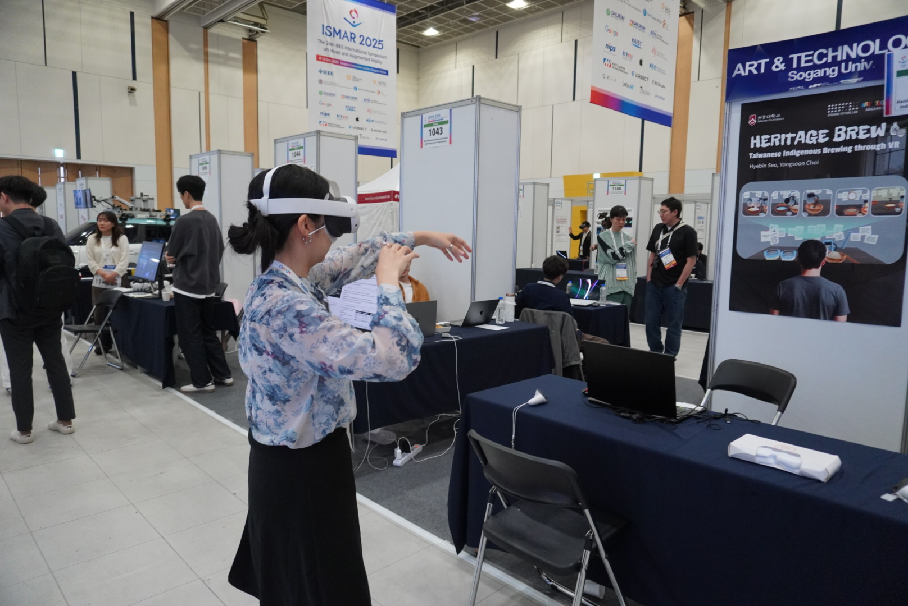

대만 파이완족 장인에게 직접 전수받은 전통주 제조법을, 대만 타이동에 가지 않고도 배울 수 있는 VR 경험으로 만들었습니다. 이 프로젝트는 AR/VR/MR 분야에서 가장 권위 있고 경쟁이 치열한 국제 학회로 꼽히는 IEEE ISMAR(International Symposium on Mixed and Augmented Reality) 2025의 데모 부문에 합격하며, 문화적 가치와 기술적 완성도를 모두 인정받았습니다. A VR experience built from a traditional liquor-making recipe, passed down directly by a Paiwan artisan, letting anyone learn Taiwan's disappearing indigenous culture without traveling to Taitung. The project was accepted into the demo track of ISMAR 2025, the IEEE International Symposium on Mixed and Augmented Reality, one of the most prestigious and competitive conferences in the AR/VR/MR field.
대만에는 여러 원주민 부족이 있고, 이들의 문화를 지키고 보존하는 일이 중요하다고 생각했습니다. 원주민 선생님을 직접 인터뷰해 전통주를 만드는 법을 배웠고, 대만 타이동까지 가지 않아도 이 지식을 배울 수 있도록 파이완족 선생님께 레시피를 전수받아 이 프로젝트를 만들었습니다.
Taiwan is home to many indigenous tribes, and protecting their culture matters. A Paiwan teacher passed down the recipe for a traditional liquor through a direct interview, and that knowledge became the seed for this project, built so people wouldn't have to travel all the way to Taitung, Taiwan to learn it.
VR 앱으로 만들어 장소와 시간에 구애받지 않고 이 문화를 경험하고 학습할 수 있도록 설계했습니다. 리서치부터 디자인, 개발까지 모두 혼자 진행했으며, 2025년 10월 열리는 국제 학회 ISMAR 2025의 데모 부문에 합격했습니다.
Built as a VR app, the experience makes this culture accessible regardless of place or time. Research, design, and development were handled entirely solo, and the project was accepted into the demo track of ISMAR 2025, an international conference held in October 2025.
